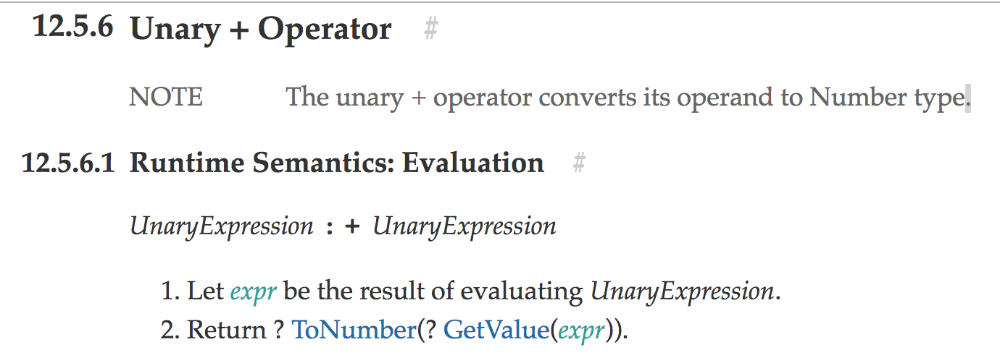

자알쓰란?
자바스크립트 알고 쓰자. (잘 쓰자는 의미도 담겨있다.)
자바스크립트라는 언어 자체는 내 기준에서는 설계 상 미스가 참 많다.
함수 단위의 스코프, 호이스팅, 동적 타입 등등
자바와 같은 깐깐(?)한 언어를 배우고 바라본 자스는 허점 투성이처럼 보였다.
애초에 자바스크립트는 어떠한 프로그램을 만들기 위해서 탄생했다기 보다는
웹 페이지에 입력값에 대한 유효성 검사(데이터가 공란인지 아닌지 등등)와 같은
페이지의 동적 제어가 주된 목적 + 짧은 개발 기간(넷 스케이프 사의 새로운 브라우저에 탑재 예정) 때문에
설계 상에 미스가 있을 수 밖에 없다고 나는 생각된다.
일종의 안전 장치가 없어서 개발자가 일일이 구현해주고, 신경써야 하는 느낌이었다.
그렇다고 해서 자바스크립트를 극혐하거나 그런 것은 아니고 매우 사랑한다.
또한 그 허점을 아는 사람은 허점을 보완해서 요리조리 피해서 잘 쓰겠지만…
잘 모르는 부분들은 잘못 써도 동작이 잘 되기 마련이다.
이는 지금 당장에는 큰 문제가 안 될지 모르겠지만, 추후에 대규모 웹 어플리케이션을 만들거나
직면할 문제로부터 미리 해방시키기 위해 처음부터 좋은 습관을 들여가는 것이 좋다고 생각한다.
이번에는 번외편 격으로 훼이크 연산자를 배워보도록 하자.
아이디어를 제공해주신 백성훈 님께 감사를 전한다.
훼이크 연산자?
말 그대로 훼이크 연산자이다. 공식 명칭은 아니다.
의도한 대로 동작하지 않는 연산자를 뜻한다.
어찌보면 왜 이렇게 스펙에 구현됐는지 이해하기 힘든 내용이라서 굳이 몰라도 될 것 같기도 하다.
기본적으로 함수 선언문은 함수의 이름이 필수적이다.
그에 반해 함수 표현식은 함수의 이름이 옵션이다.
디버깅을 위해서 권장을 한다지만 크롬에서는 이마저도 기본으로 제공해주는 것 같다.
에러가 전혀 나질 않는다.
하지만 여기서 공통된 부분이 보인다.
위 두 구문에서 변수 선언을 제외하고는 완전히 일치한다.
이 내용들이 아래 (훼이크)연산자들을 만나면 시너지(?)를 발휘한다.
모두 단항(Unary) 연산자들이다.
|
|
단항 연산자가 뭐라고 훼이크 연산자라고 말하는지 모르겠다면
최신 스펙 문서인 ES2017 스펙의 Unary Operator 부분에서 대표적으로 Unary + Operator만 살펴보자.

맨 위에 보이듯이 우선 우리가 예측하는, + 연산자의 기능은 뒤에 있는 표현식의 평가 결과로써 얻어지는 값을 숫자형으로 변환해주는 기능을 한다.
그렇다. + 뒤에있는 녀석은 무조건 표현식으로 취급한다.
그 뒤에 있는 녀석이 표현식으로서의 문법만 지켰다면 선언문이어도 표현식인 것처럼 강제로 문변환? 식변환?이 일어나게 되는 것이다.
그렇다면 우리가 살펴볼 훼이크 오퍼레이터 부분은 아래 부분에 나온다.evaluating UnaryExpression. + 뒤에 나오는 단항 표현식을 평가한다고 하는 것 같다.
그렇다면 여기서 한 번 짱구를 굴려봐서
선언
문을 표현식으로서 강제시켜서 써먹을 수 있는 방법이 있을까?
라는 생각까지 미치게 된다. (사실 나도 다른 글을 보고 유추한 거지만…)
그렇다면 선언문과 표현식이 같은 문법으로 쓰이는 경우를 찾아보니 위에 적어논 익명(?) 함수 선언문과 익명 함수 표현식이었다.
익명 함수 선언문은 오류를 뿜지만 이를 표현식으로써 사용한다면 문법상 오류를 뿜어내질 않는다.
확인해보자.
이렇게만 쓰면 의미가 없으니 대부분 IIFE(Immediately Invoked Function Expressions, 즉시 실행 함수)와 엮어서 많이 쓴다.
그런데 나는 딱히 즉시 실행 함수의 가독성이 나쁘다고 생각해본 적이 없고,
즉시 실행 함수의 반환값을 가지고 뭘 해본 적이 없어서 딱히 필요성은 잘 모르겠다.
다만 선언문 형태를 표현식으로서 취급한다는 게 신기했다.